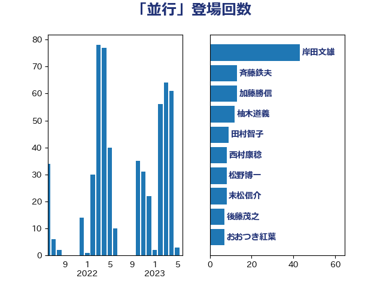

単語「並行」

| 岸田文雄 | 自由民主党 | 43 回 |
| 斉藤鉄夫 | 公明党 | 13 回 |
| 加藤勝信 | 自由民主党 | 13 回 |
| 柚木道義 | 立憲民主党 | 12 回 |
| 田村智子 | 日本共産党 | 9 回 |
| 西村康稔 | 自由民主党 | 8 回 |
| 松野博一 | 自由民主党 | 8 回 |
| 末松信介 | 自由民主党 | 8 回 |
| 後藤茂之 | 自由民主党 | 7 回 |
| おおつき紅葉 | 立憲民主党 | 7 回 |
| 北神圭朗 | 無所属 | 5 回 |
| 音喜多駿 | 日本維新の会 | 4 回 |
| 鈴木義弘 | 国民民主党 | 4 回 |
| 石井正弘 | 自由民主党 | 4 回 |
| 玉木雄一郎 | 国民民主党 | 4 回 |
| 東国幹 | 自由民主党 | 4 回 |
| 川田龍平 | 立憲民主党 | 4 回 |
| 山本剛正 | 日本維新の会 | 4 回 |
| 道下大樹 | 立憲民主党 | 3 回 |
| 近藤和也 | 立憲民主党 | 3 回 |
| 足立康史 | 日本維新の会 | 3 回 |
| 角田秀穂 | 公明党 | 3 回 |
| 西銘恒三郎 | 自由民主党 | 3 回 |
| 萩生田光一 | 自由民主党 | 3 回 |
| 緑川貴士 | 立憲民主党 | 3 回 |
| 牧山ひろえ | 立憲民主党 | 3 回 |
| 源馬謙太郎 | 立憲民主党 | 3 回 |
| 浜口誠 | 国民民主党 | 3 回 |
| 森屋隆 | 立憲民主党 | 3 回 |
| 本田顕子 | 自由民主党 | 3 回 |
| 末次精一 | 立憲民主党 | 3 回 |
| 斎藤アレックス | 国民民主党 | 3 回 |
| 平木大作 | 公明党 | 3 回 |
| 岡本あき子 | 立憲民主党 | 3 回 |
| 山口壯 | 自由民主党 | 3 回 |
| 古川禎久 | 自由民主党 | 3 回 |
| 高橋はるみ | 自由民主党 | 2 回 |
| 高木かおり | 日本維新の会 | 2 回 |
| 馬場伸幸 | 日本維新の会 | 2 回 |
| 鈴木貴子 | 自由民主党 | 2 回 |
| 鈴木敦 | 国民民主党 | 2 回 |
| 鈴木俊一 | 自由民主党 | 2 回 |
| 里見隆治 | 公明党 | 2 回 |
| 進藤金日子 | 自由民主党 | 2 回 |
| 若宮健嗣 | 自由民主党 | 2 回 |
| 船田元 | 自由民主党 | 2 回 |
| 舟山康江 | 国民民主党 | 2 回 |
| 神津たけし | 立憲民主党 | 2 回 |
| 矢倉克夫 | 公明党 | 2 回 |
| 田村まみ | 国民民主党 | 2 回 |
| 浜田靖一 | 自由民主党 | 2 回 |
| 永岡桂子 | 自由民主党 | 2 回 |
| 梅村みずほ | 日本維新の会 | 2 回 |
| 林芳正 | 自由民主党 | 2 回 |
| 松本尚 | 自由民主党 | 2 回 |
| 末松義規 | 立憲民主党 | 2 回 |
| 岬麻紀 | 日本維新の会 | 2 回 |
| 山際大志郎 | 自由民主党 | 2 回 |
| 小林鷹之 | 自由民主党 | 2 回 |
| 宮本徹 | 日本共産党 | 2 回 |
| 大西健介 | 立憲民主党 | 2 回 |
| 大塚耕平 | 国民民主党 | 2 回 |
| 堀内詔子 | 自由民主党 | 2 回 |
| 城井崇 | 立憲民主党 | 2 回 |
| 井上貴博 | 自由民主党 | 2 回 |
| 中川康洋 | 公明党 | 2 回 |
| 中島克仁 | 立憲民主党 | 2 回 |
| 三浦靖 | 自由民主党 | 2 回 |
| 鬼木誠 | 立憲民主党 | 1 回 |
| 高階恵美子 | 自由民主党 | 1 回 |
| 高橋英明 | 日本維新の会 | 1 回 |
| 高市早苗 | 自由民主党 | 1 回 |
| 青柳仁士 | 日本維新の会 | 1 回 |
| 青山大人 | 立憲民主党 | 1 回 |
| 階猛 | 立憲民主党 | 1 回 |
| 長友慎治 | 国民民主党 | 1 回 |
| 鈴木庸介 | 立憲民主党 | 1 回 |
| 金子道仁 | 日本維新の会 | 1 回 |
| 金子恭之 | 自由民主党 | 1 回 |
| 金城泰邦 | 公明党 | 1 回 |
| 野間健 | 立憲民主党 | 1 回 |
| 重徳和彦 | 立憲民主党 | 1 回 |
| 遠藤敬 | 日本維新の会 | 1 回 |
| 足立敏之 | 自由民主党 | 1 回 |
| 赤木正幸 | 日本維新の会 | 1 回 |
| 赤嶺政賢 | 日本共産党 | 1 回 |
| 藤木眞也 | 自由民主党 | 1 回 |
| 藤巻健太 | 日本維新の会 | 1 回 |
| 葉梨康弘 | 自由民主党 | 1 回 |
| 菅家一郎 | 自由民主党 | 1 回 |
| 茂木敏充 | 自由民主党 | 1 回 |
| 美延映夫 | 日本維新の会 | 1 回 |
| 緒方林太郎 | 無所属 | 1 回 |
| 紙智子 | 日本共産党 | 1 回 |
| 簗和生 | 自由民主党 | 1 回 |
| 竹内真二 | 公明党 | 1 回 |
| 穀田恵二 | 日本共産党 | 1 回 |
| 稲津久 | 公明党 | 1 回 |
| 福島伸享 | 無所属 | 1 回 |
| 福山哲郎 | 立憲民主党 | 1 回 |
| 神田潤一 | 自由民主党 | 1 回 |
| 礒崎哲史 | 国民民主党 | 1 回 |
| 磯崎仁彦 | 自由民主党 | 1 回 |
| 石川香織 | 立憲民主党 | 1 回 |
| 石川大我 | 立憲民主党 | 1 回 |
| 石川博崇 | 公明党 | 1 回 |
| 田村憲久 | 自由民主党 | 1 回 |
| 田中昌史 | 自由民主党 | 1 回 |
| 田中健 | 国民民主党 | 1 回 |
| 牧原秀樹 | 自由民主党 | 1 回 |
| 清水真人 | 自由民主党 | 1 回 |
| 池畑浩太朗 | 日本維新の会 | 1 回 |
| 池田佳隆 | 自由民主党 | 1 回 |
| 水岡俊一 | 立憲民主党 | 1 回 |
| 森本真治 | 立憲民主党 | 1 回 |
| 森山浩行 | 立憲民主党 | 1 回 |
| 梅谷守 | 立憲民主党 | 1 回 |
| 柴山昌彦 | 自由民主党 | 1 回 |
| 柳ヶ瀬裕文 | 日本維新の会 | 1 回 |
| 松野明美 | 日本維新の会 | 1 回 |
| 松沢成文 | 日本維新の会 | 1 回 |
| 松本剛明 | 自由民主党 | 1 回 |
| 松原仁 | 立憲民主党 | 1 回 |
| 東徹 | 日本維新の会 | 1 回 |
| 杉尾秀哉 | 立憲民主党 | 1 回 |
| 木原稔 | 自由民主党 | 1 回 |
| 朝日健太郎 | 自由民主党 | 1 回 |
| 早稲田ゆき | 立憲民主党 | 1 回 |
| 日下正喜 | 公明党 | 1 回 |
| 新藤義孝 | 自由民主党 | 1 回 |
| 斎藤嘉隆 | 立憲民主党 | 1 回 |
| 徳永久志 | 立憲民主党 | 1 回 |
| 平山佐知子 | 無所属 | 1 回 |
| 岸真紀子 | 立憲民主党 | 1 回 |
| 岩本剛人 | 自由民主党 | 1 回 |
| 岡田克也 | 立憲民主党 | 1 回 |
| 山添拓 | 日本共産党 | 1 回 |
| 山本太郎 | れいわ新選組 | 1 回 |
| 山崎正恭 | 公明党 | 1 回 |
| 山下雄平 | 自由民主党 | 1 回 |
| 山下芳生 | 日本共産党 | 1 回 |
| 小野泰輔 | 日本維新の会 | 1 回 |
| 小西洋之 | 立憲民主党 | 1 回 |
| 小森卓郎 | 自由民主党 | 1 回 |
| 宮本岳志 | 日本共産党 | 1 回 |
| 宮崎政久 | 自由民主党 | 1 回 |
| 宮口治子 | 立憲民主党 | 1 回 |
| 宮下一郎 | 自由民主党 | 1 回 |
| 室井邦彦 | 日本維新の会 | 1 回 |
| 安江伸夫 | 公明党 | 1 回 |
| 奥野総一郎 | 立憲民主党 | 1 回 |
| 大島敦 | 立憲民主党 | 1 回 |
| 大口善徳 | 公明党 | 1 回 |
| 大串博志 | 立憲民主党 | 1 回 |
| 塩川鉄也 | 日本共産党 | 1 回 |
| 塩崎彰久 | 自由民主党 | 1 回 |
| 堤かなめ | 立憲民主党 | 1 回 |
| 堂込麻紀子 | 無所属 | 1 回 |
| 堀場幸子 | 日本維新の会 | 1 回 |
| 土田慎 | 自由民主党 | 1 回 |
| 吉井章 | 自由民主党 | 1 回 |
| 古賀之士 | 立憲民主党 | 1 回 |
| 勝目康 | 自由民主党 | 1 回 |
| 伊藤渉 | 公明党 | 1 回 |
| 伊藤俊輔 | 立憲民主党 | 1 回 |
| 今井絵理子 | 自由民主党 | 1 回 |
| 仁比聡平 | 日本共産党 | 1 回 |
| 井坂信彦 | 立憲民主党 | 1 回 |
| 五十嵐清 | 自由民主党 | 1 回 |
| 中川郁子 | 自由民主党 | 1 回 |
| 中川正春 | 立憲民主党 | 1 回 |
| 中司宏 | 日本維新の会 | 1 回 |
| 上田英俊 | 自由民主党 | 1 回 |
| 上月良祐 | 自由民主党 | 1 回 |
| 三浦信祐 | 公明党 | 1 回 |